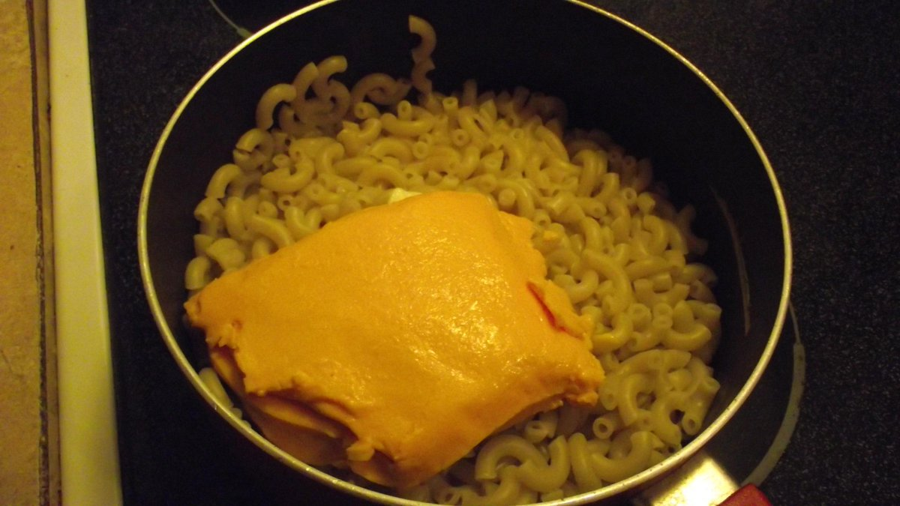

KRAFT DINNER RECIPE

DESCRIPTION
Kraft Dinner is a brand of discounted macaroni and cheese, made with the shavings of dessicated entrails and bacterial dairy cultures in powdered form. The dish is most popular in this boxed iteration in Canada, where fresh macaroni trees are scarce and the northern population, living mostly in igloos and commuting on the backs of moose, have acquired a simple taste for the following recipe.
Prep Time: 1 min
Cook Time:7 min
INGREDIENTS
- 1 box of KD macaroni
- 1 pot to boil water
- stovetop or heating element
- Strainer or pot lid
- Stirring spoon, or hand if you're a badass
- 1.5 L water
- 1 package of flavoured dairy crystals
- 1 tbsp butter
- 1-2 tbsps of milk
- salt & pepper to taste
STEPS
- Bring water in pot to boil
- Dump macaroni in boiling water and stir
- Once macaronis are feeble and pathetic, strain the water
- Return macaronis to the pot from whence they came
- Add the milk, flavoured dairy crystals, butter, salt & pepper then stir until you achieved a homogenized mess of all ingredients.
- Serve on a plate or consume directly from the pot as desired.